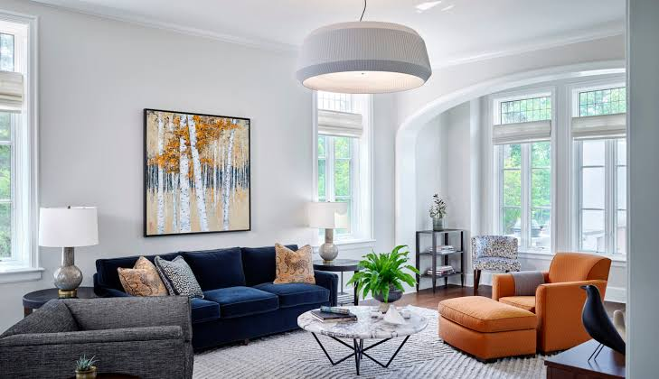
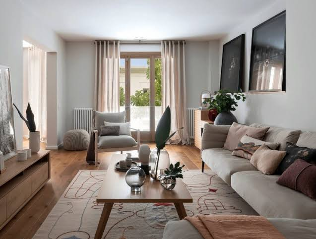
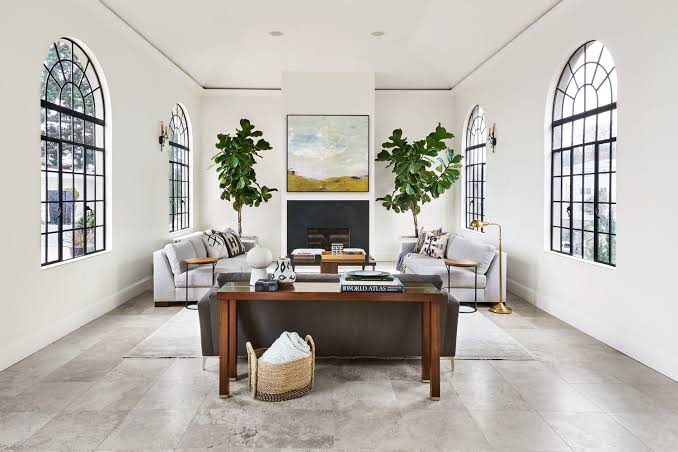
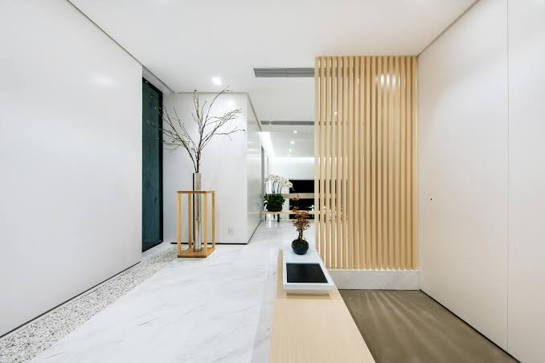
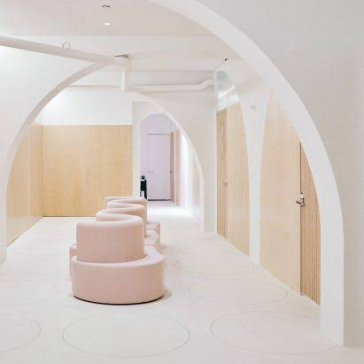
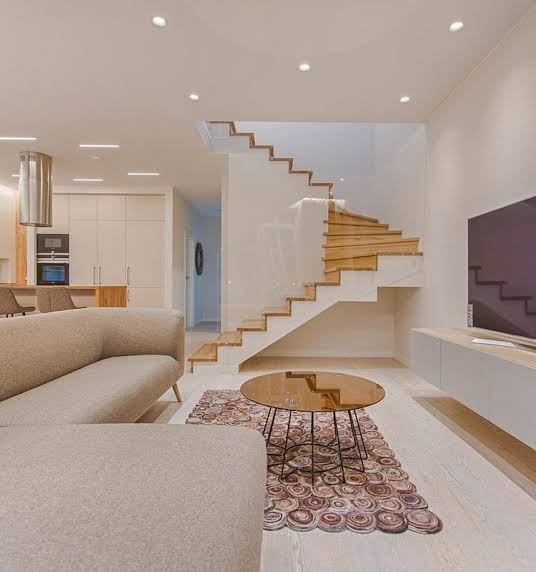

In the past, interiors were put together instinctively as a part of the process of building.
The profession of interior design has been a consequence of the development of society and the complex architecture that has resulted from the development of industrial processes.

The pursuit of effective use of space, user well-being and functional design has contributed to the development of the contemporary interior design profession.The profession of interior design is separate and distinct from the role of interior decorator, a term commonly used in the US; the term is less common in the UK, where the profession of interior design is still unregulated and therefore, strictly speaking, not yet officially a profession.

In ancient India, architects would also function as interior designers. This can be seen from the references of Vishwakarma the architect—one of the gods in Indian mythology. In these architects' design of 17th-century Indian homes, sculptures depicting ancient texts and events are seen inside the palaces, while during the medieval times wall art paintings were a common feature of palace-like mansions in India commonly known as havelis. While most traditional homes have been demolished to make way to modern buildings, there are still around 2000 havelis in the Shekhawati region of Rajashtan that display wall art paintings.

In ancient Egypt, "soul houses" (or models of houses) were placed in tombs as receptacles for food offerings. From these, it is possible to discern details about the interior design of different residences throughout the different Egyptian dynasties, such as changes in ventilation, porticoes, columns, loggias, windows, and doors.

Painting interior walls has existed for at least 5,000 years, with examples found as far north as the Ness of Brodgar,as have templated interiors, as seen in the associated Skara Brae settlement.It was the Greeks, and later Romans who added co-ordinated, decorative mosaics floors, and templated bath houses, shops, civil offices, Castra (forts) and temple, interiors, in the first millennia BC. With specialised guilds dedicated to producing interior decoration, and formulaic furniture, in buildings constructed to forms defined by Roman architects, such as Vitruvius: De architectura, libri decem (The Ten Books on Architecture).

Throughout the 17th and 18th century and into the early 19th century,interior decoration was the concern of the homemaker, or an employed upholsterer or craftsman who would advise on the artistic style for an interior space. Architects would also employ craftsmen or artisans to complete interior design for their buildings.